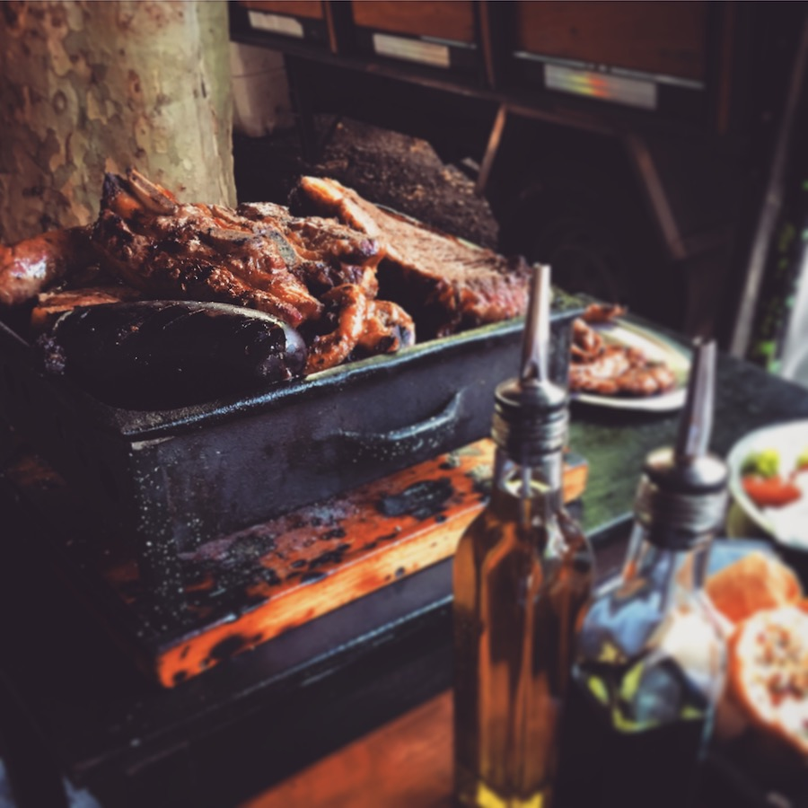
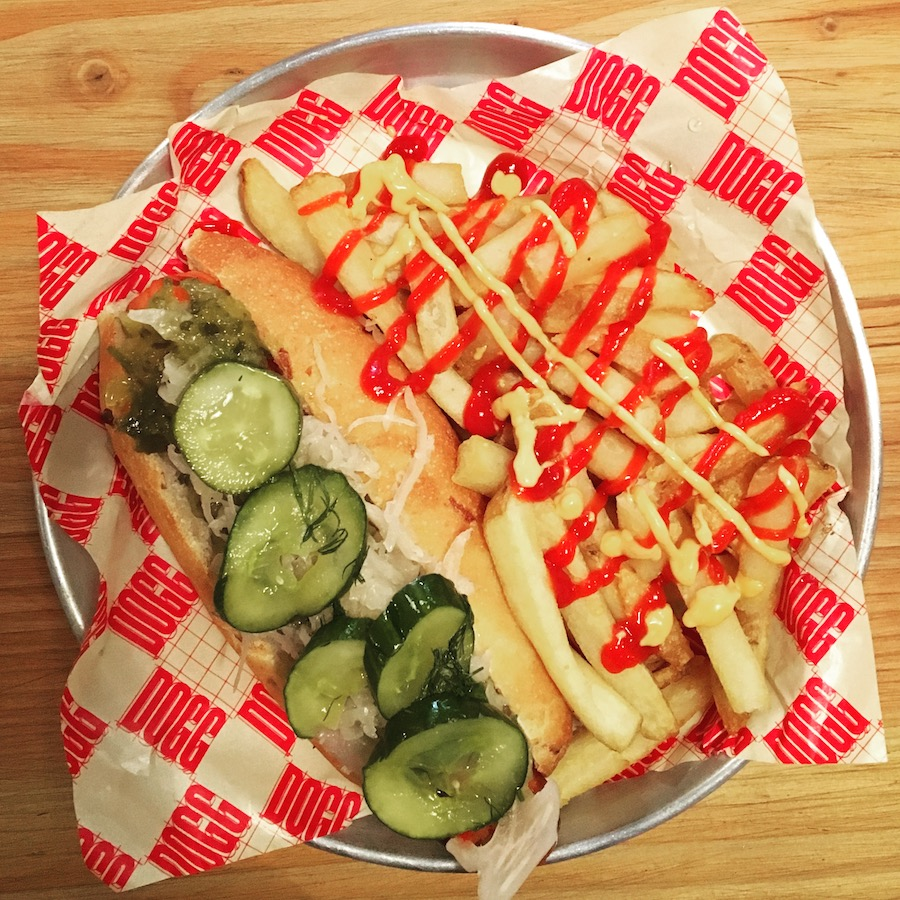

EATING BUENOS AIRES
— what to eat when you're here, and where to find it

ALFAJOR
A delicious dollop of dulce de leche sandwiched between two round cookies.
Find them anywhere. I recommend those at
Santa Café
,
Lattente
, and
Felix Felicis & Co
.
The pecan ones at
Cuervo
are an addicition for me.

ASADO
The sacred Argentinian barbecue. There are tonnes of parillas (grill houses) to choose from. But your best bet is to meet a local and get invited to their asado.
If you have no friends then
Don Julio
is killer, or
Le Gran Hollywood
has more of a local feel.
EMPANADA
A beautiful little stuffed pastry. Filled with beef, chicken, cheese, and the list goes on. Make these a part of your daily diet.
BONDIOLA
Pork shoudler sandwich. The dream. I can't stress enough how delicious this thing is.
The best I had was from
Ahumados Milberg
,
but it's far. They do have a stand at
Feria Masticar
If you're around in May or November. Otherwise word is that the trucks outside
Reserva Ecológica
do a killer bondiola sandwich.
FUGAZETTA
An onion topped pizza stuffed with cheese. Lots of cheese. This thing is heavy.
Go to
Güerrin
for one of these, it's a step back in time and soaking in the spirit of the place is as much an experience as eating the fugazzeta itself.
CHOCOTORTA
Argentinians seem to love this cake. It's theirs, and they're forgiven for being so proud, because it's a rich sweet slice of heaven.
Get it pretty much anywhere, but I particularly enjoyed the one I had at
Bar de Pasaje
,
a bright little cafeteria tucked away behind a book store.
CHORIPAN
Chorizo and bread sounds dull and unimaginative. But it's not. Shut up and eat your choripan.
Chori
is the top spot for me. If you're lucky enough to be here for
Feria Masticar
then leave room for one from any of the many stalls selling them.
TACO
This Mexican love affair needs no introduction.
The little Mexican canteen
La Fábrica del Taco
absolutely kills it. Get the carnitas.
LOMITO
The classic Argentinian steak sandwich. Bacon, lettuce, and tomato too. Great stuff.
La Rambla
do a good one, they also take you back to the forties. Otherwise you can find them pretty much anywhere.

PANCHO
Gross ass hot dogs have never been better. Usually reserved for those regrettable end of night moments.
Get these anywhere at your own risk. But for a truly satisfying one,
Dogg
is the place to go.